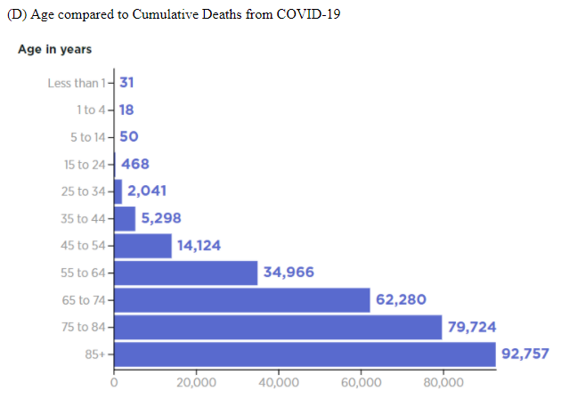

Exponential Outbreak
This histogram from "COVID-19 Deaths by Age | The Heritage Foundation" shows the comparison of COVID-19 deaths and age in the United States (January 1, 2020-December 23, 2020). As shown in the graph, as the age increases, the number of deaths from COVID-19 increases. In fact, only 0.2% of deaths from COVID are people under the age of 25. A total of 291,757 have died from COVID-19. Out of that 291,757, only 567 people under the age of 25 have died.